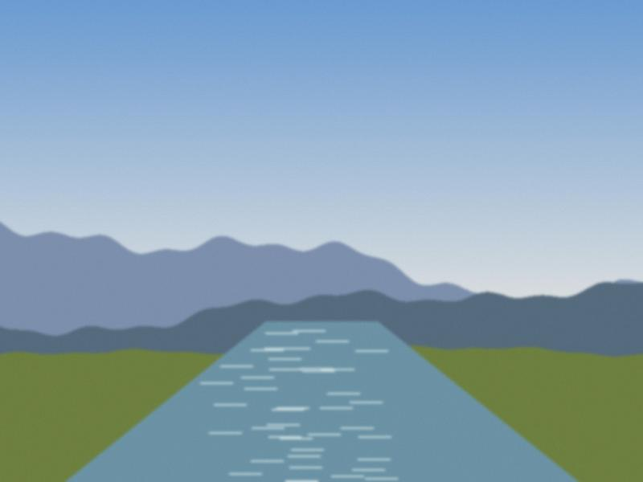
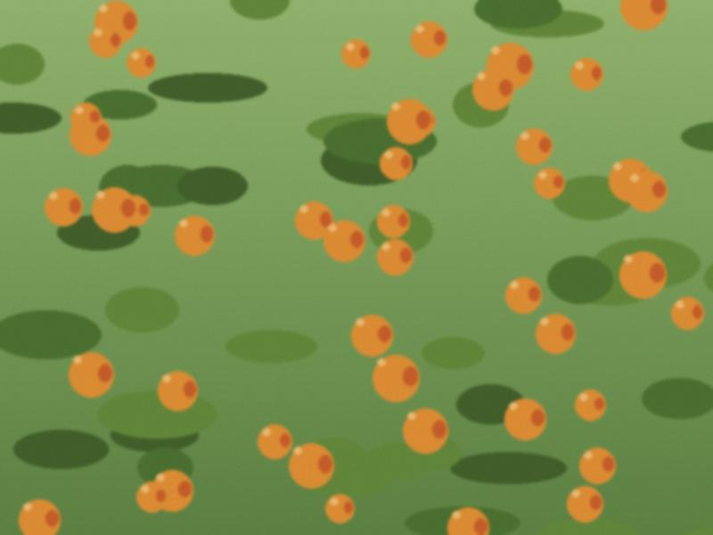

Archive for the ‘evergreen’ Category
The mirab's exercise book
Follow-up to the water note. The old mirab of our street died in the spring, and his daughter gave me the exercise book to copy. It is a school notebook, squared, 48 pages, in pencil: the hours of each yard, by name, for thirty years, with the changes in the margin. "Kaiyrbek: 2 hours less, wedding." "Sat: all night to the widow."
Nobody ever argued with the exercise book because, I think, everyone was in it. I will scan it for the archive in the town library, if they have a scanner. See Water turns.

The ditch at our street, near the turning gate.Winter pruning
What my grandfather did in February, on a dry day, with a saw, secateurs and a bit of tar from a tin:
- First cut out dead wood, black or grey inside.
- Then branches that cross each other.
- Then a third of the new growth on the apricot, no more.
- Paint every cut over 3 cm with tar.
He did the old tree on the right first, "so that the young ones watch and learn". The saw is still in the shed. Linked: Grafting, as my grandfather did it.
My aunt's blog
My aunt Saltanat Kubanychbekovna taught history at School No. 1 for thirty years and kept a blog on Kündölük from 2006 to 2019. I made its colours when I was 15. She thanked me for them in her last post and I didn't read that post until 2022.
Her lesson notes are better than any textbook on our valley. If you teach, take them; she said so herself. Links in the sidebar. See also Kyzyl-Adyr place names.
Sary-Say
Every year on 23 July my aunt wrote one line on the blackboard of the history room and then taught as usual. This year I sat down and understood why. A lake behind a moraine, a hot week, a night. A village of seven hundred people. The doctor's list with three hundred names, printed in 1989.
I have nothing to add as a gardener. I only write the date here so that the garden remembers it, too. See My aunt's blog.
On apricots and patience

Granny's tree, July 2023.Granny's tree in the yard in Kyzyl-Adyr gives fruit every other year. In the off years she says the tree is "thinking". Notes on why, linked to Grafting, as my grandfather did it, The frost of 2008 and Water turns.
The short answer is that apricots fruit in alternate years when a heavy crop exhausts the tree. The long answer is that my grandmother has never once been wrong about this tree and I have stopped arguing.